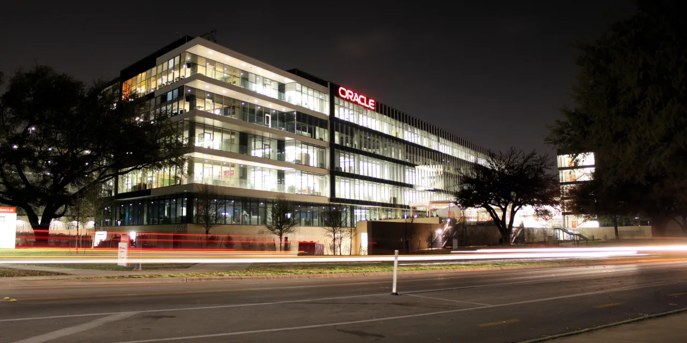

오라클 주주가 지금 가장 궁금해할 질문은 “AI 수주가 많다”가 아닙니다. 이미 숫자는 큽니다. 더 중요한 질문은 5,530억 달러의 잔여계약가치가 실제 클라우드 매출, 사용률, 마진, 현금흐름으로 얼마나 빠르게 바뀌느냐입니다. 클라우드 사업은 호텔 운영과 비슷합니다. 객실을 크게 짓는 것보다, 비싼 객실이 빈방 없이 돌아가고 유지비를 이길 만큼 높은 가격을 받는지가 중요합니다.
오라클의 FY2026 3분기 실적 발표를 보면 시장이 흥분한 이유는 분명합니다. 분기 총매출은 172억 달러로 전년 대비 22% 증가했고, 클라우드 매출은 89억 달러로 44% 증가했습니다. 그중 클라우드 인프라 매출은 49억 달러로 84% 증가했습니다. RPO는 5,530억 달러로 전년 대비 325% 늘었습니다. 이 정도면 오라클이 AI 클라우드 수요의 중심부로 들어왔다는 해석이 나옵니다.
하지만 RPO는 아직 매출이 아닙니다. 계약된 미래 매출의 성격을 보여주는 숫자일 뿐입니다. 주주는 이 숫자를 보고 안심하기 전에, 고객이 선지급한 돈과 고객이 직접 공급하는 GPU 구조, 데이터센터 전력 확보, 리전 증설 속도, 장기 약정의 수익성을 함께 봐야 합니다. 특히 오라클이 추가 자금조달 없이 AI 계약을 지원할 수 있다고 설명한 부분은 긍정적이지만, 동시에 고객별 조건이 얼마나 다른지도 확인해야 합니다.
RPO는 매출표가 아니라 납품 약속입니다

오라클의 RPO는 이번 분기 투자자들이 가장 먼저 본 숫자입니다. 5,530억 달러라는 규모는 클라우드 기업의 미래 매출 기대를 한 번에 바꿀 만큼 큽니다. 특히 대규모 AI 고객 계약이 포함되어 있다는 점은 오라클이 GPU 클러스터와 데이터베이스 고객 기반을 묶어 새로운 클라우드 수요를 잡고 있다는 신호입니다. 과거의 오라클이 데이터베이스와 유지보수 회사였다면, 지금의 오라클은 AI 컴퓨트 용량을 파는 회사로 다시 평가받고 있습니다.
다만 RPO가 커질 때 투자자는 두 가지를 나눠야 합니다. 하나는 계약의 규모이고, 다른 하나는 계약의 경제성입니다. 고객이 장기 약정을 했다고 해도 오라클이 서버, 전력, 냉각, 네트워크, 부지, 운영 인력을 먼저 준비해야 한다면 현금 부담이 생깁니다. 회사가 고객 선지급이나 고객 제공 GPU 구조를 말한 것은 바로 이 부담을 줄이는 장치입니다. 이 구조가 실제로 작동하면 오라클은 큰 자본 부담 없이 AI 수요를 잡을 수 있습니다.
반대로 고객 선지급 구조가 특정 대형 고객에 집중되어 있거나, 데이터센터 착공과 전력 연결이 늦어지면 RPO는 숫자로 남고 매출 전환은 늦어질 수 있습니다. 오라클의 좋은 시나리오는 RPO가 분기마다 매출로 흘러 들어오면서 클라우드 인프라 마진이 훼손되지 않는 것입니다. 나쁜 시나리오는 수주 발표는 커지지만 실제 용량 준비와 고객 사용률이 따라오지 못하는 것입니다.
AI 클라우드는 전력과 GPU가 먼저 병목이 됩니다
관련 영상
오라클 AI 월드 투어 2026 클라우드와 AI 전략을 설명하는 공식 롱폼 영상
AI 클라우드 수요는 일반 클라우드 수요보다 더 무겁습니다. GPU 서버는 비싸고, 전력과 냉각 요구량이 크며, 네트워크 지연과 데이터 이동 비용도 중요합니다. 오라클은 데이터베이스 고객 기반과 엔비디아 생태계, 멀티클라우드 데이터베이스 전략을 앞세워 수요를 잡고 있습니다. 그러나 수요가 있다고 해서 곧바로 높은 수익성이 보장되지는 않습니다. AI 클러스터는 가동률이 낮으면 비용이 빠르게 새어 나갑니다.
오라클이 마이크로소프트, 아마존, 알파벳과 다른 점은 뒤늦게 AI 클라우드 확장을 강하게 밀어붙이는 회사라는 점입니다. 후발주자라는 말은 약점만 뜻하지 않습니다. 특정 대형 고객의 AI 훈련 수요를 빠르게 잡고, 기존 데이터베이스 고객에게 멀티클라우드 연결을 제공하면 성장률은 더 높게 보일 수 있습니다. 하지만 후발 확장에는 리스크도 있습니다. 데이터센터 부지와 전력 계약을 서둘러 확보해야 하고, 고객이 요구하는 일정에 맞춰 용량을 먼저 열어야 합니다.
그래서 다음 실적에서 봐야 할 것은 클라우드 인프라 매출 성장률만이 아닙니다. AI 데이터센터 용량이 얼마나 빨리 열리는지, 열리는 용량이 바로 사용되는지, 사용량 과금이 가격 인하 없이 유지되는지를 함께 봐야 합니다. OCI 매출 49억 달러와 84% 성장률은 강한 출발입니다. 다만 5,530억 달러 RPO를 정당화하려면 이 성장률이 몇 분기 이상 실제 매출과 현금흐름으로 이어져야 합니다.
데이터베이스 고객은 오라클의 방어선입니다
오라클의 가장 큰 강점은 여전히 데이터베이스입니다. 기업 핵심 시스템은 쉽게 옮겨지지 않습니다. 금융, 통신, 제조, 공공 영역에서 오라클 데이터베이스는 오래된 시스템일수록 더 깊게 박혀 있습니다. 이 고객들이 AI 분석, 데이터 통합, 클라우드 전환을 시작할 때 오라클은 “이미 쓰는 데이터베이스 옆에 클라우드와 AI를 붙이자”는 제안을 할 수 있습니다. 이 점은 단순 GPU 임대 회사와 다릅니다.
멀티클라우드 데이터베이스 매출이 빠르게 늘어나는 점도 중요합니다. 기업은 하나의 클라우드만 쓰지 않습니다. 마이크로소프트 애저, 아마존 AWS, 구글 클라우드 안에서 오라클 데이터베이스를 함께 쓰고 싶어 하는 고객이 있습니다. 오라클이 이 지점을 잘 잡으면 클라우드 전환 예산을 경쟁자에게 모두 빼앗기지 않고, 오히려 경쟁자의 클라우드 안에서도 데이터베이스 사용료를 받을 수 있습니다.
하지만 이 방어선에도 한계가 있습니다. 고객이 오라클 데이터베이스를 유지하는 이유가 기술 우위보다 전환 비용이라면, 장기적으로는 가격 인상 저항이 생깁니다. 또한 AI 애플리케이션이 새 데이터 플랫폼 위에서 만들어질수록 기존 데이터베이스의 잠금 효과가 약해질 수 있습니다. 주주는 오라클의 데이터베이스 기반을 안정적인 해자와 비용 전가 수단으로 보되, 그것만으로 AI 클라우드 투자가 모두 설명된다고 보지는 않아야 합니다.
다음 실적에서 확인할 네 가지 숫자
첫 번째는 RPO 증가 속도보다 RPO 매출 전환 속도입니다. 이미 RPO는 충분히 큽니다. 이제 더 중요한 것은 5,530억 달러가 매출로 얼마나 빠르게 내려오는지입니다. 두 번째는 클라우드 인프라 매출과 마진의 동행입니다. OCI 매출이 84% 성장하더라도 전력, 감가상각, GPU 비용 때문에 마진이 눌리면 주가는 수주보다 비용을 먼저 볼 수 있습니다.
세 번째는 자본지출과 고객 선지급의 균형입니다. 오라클이 고객 선지급과 고객 제공 GPU를 활용해 대규모 AI 계약을 지원한다면 부채 부담은 줄어듭니다. 그러나 모든 계약이 같은 구조는 아닐 수 있습니다. 다음 공시에서는 설비투자 규모, 현금흐름, 차입 계획, 데이터센터 관련 장기 약정이 함께 움직이는지 봐야 합니다. 네 번째는 멀티클라우드 데이터베이스 매출입니다. 이 매출이 계속 커지면 오라클은 단순 AI 컴퓨트 공급자가 아니라 기업 데이터 관문으로 남을 수 있습니다.
오라클은 지금 좋은 뉴스가 많은 회사입니다. AI 수요, RPO, 클라우드 인프라 성장률, 데이터베이스 고객 기반이 동시에 주가 이야기를 만들고 있습니다. 그러나 좋은 회사라도 비싼 기대를 감당하려면 숫자가 더 엄격해야 합니다. 지금 주주에게 필요한 것은 5,530억 달러 RPO에 놀라는 일이 아니라, 그 약속이 데이터센터 용량, 고객 사용률, 마진, 잉여현금흐름으로 바뀌는 순서를 분기마다 확인하는 일입니다.